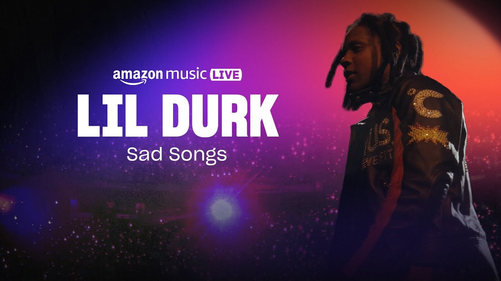
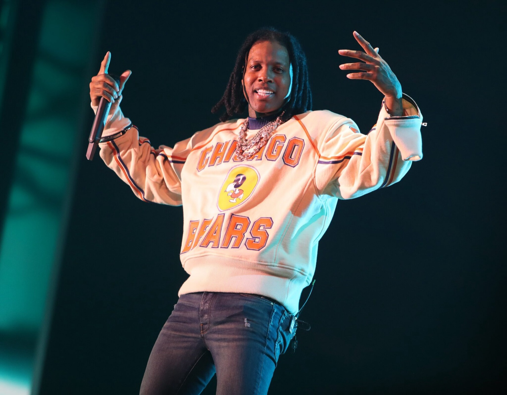
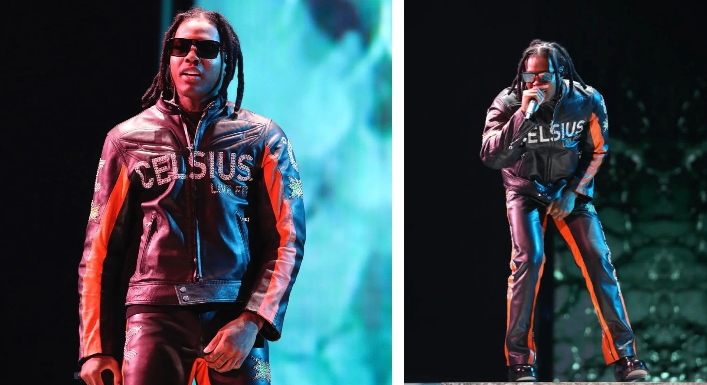
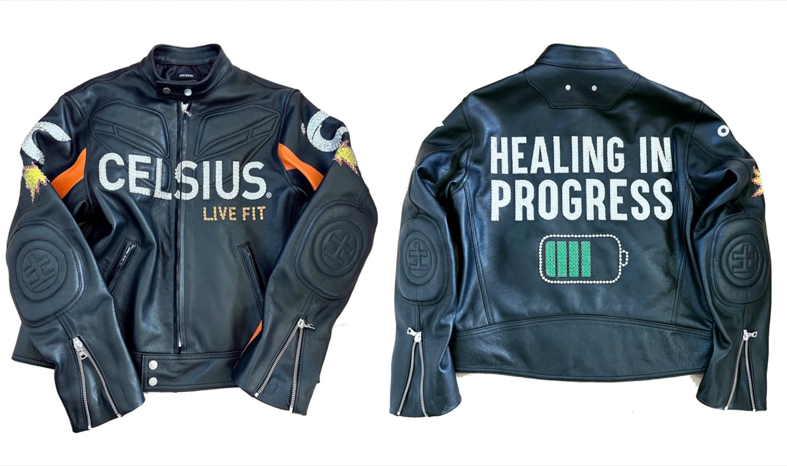
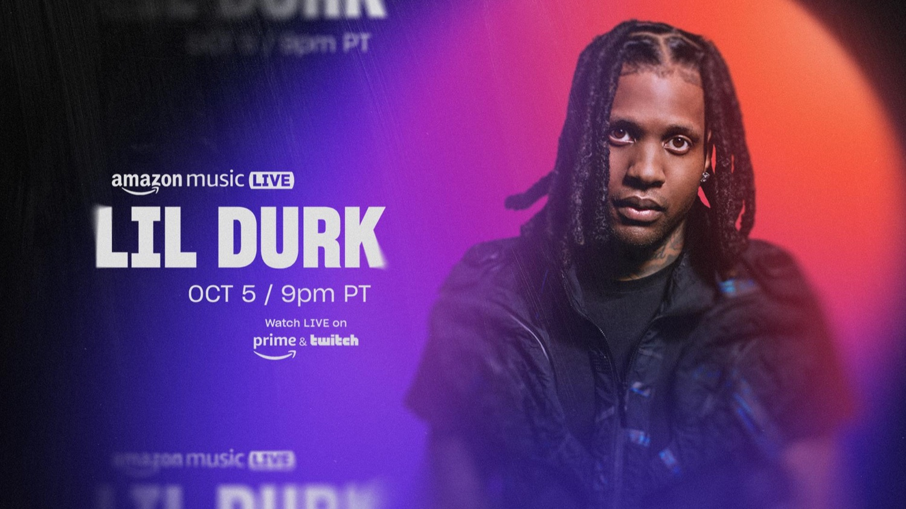

Wardrobe Design / Live Performance
Lil Durk / Amazon Music Live
About the project
A custom Celsius leather racing jacket and matching look for Lil Durk's Amazon Music Live performance: "Healing in Progress" across the back, built to read on a broadcast stage.
PAZL® collaborates with stylists and performing artists to design and custom-tailor outfits for stage performances and televised appearances.





Credits
- Wardrobe design
- PAZL®
- Creative direction
- Fred Saint Foster
- Artist
- Lil Durk
- Partners
- Celsius, Amazon Music